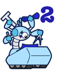

Blueprints: A Property Graph Model Interface
http://blueprints.tinkerpop.com
Blueprints 2.y.z

Version 2.3.0 (March 20, 2013)
<dependency>
<groupId>com.tinkerpop.blueprints</groupId>
<artifactId>blueprints-core</artifactId>
<version>2.3.0</version>
</dependency>- Generalized
IdGraphto selectively enable custom vertex or edge IDs - Stricter testing of property keys/value to ensure legal Blueprints values (no id, label, empty string, null)
Element.getProperty()API signature changed to support automatic typing to declared variable type- Moved
PropertyGraphSail, which provides a dynamic RDF view of any Blueprints graph, from Tinkubator intoblueprints-graph-sail - Bumped major versions of Ripple and SesameTools
Neo4jBatchGraphproject moved toNeo4jGraphundercom.tinkerpop.blueprints.impls.neo4j.batchOrientBatchGraphmoved tocom.tinkerpop.blueprints.impls.orient.batch- Added
GraphQueryin order to support intelligent indexing systems (Vertex.query()andGraph.query()) - Refactoring of wrappers to ensure proper propagation of
Graphreference - Fixed a
ConcurrentModificationExceptionin TinkerGraph ElementAPI changed to supportElement.remove()VertexAPI changed to supportVertex.addEdge(String,Vertex)- Bumped to support Neo4j 1.9.M05
- Improved transaction concurrency in
DexGraph - Deprecated
TransactionalGraph.stopTransaction()in favor ofcommit()androllback() - Renamed
ThreadedTransactionalGraph.startTransaction()toThreadedTransactionalGraph.newTransaction() - Loosened restrictions on edge-indexing in
GraphSail(though for some types of queries, exception thrown) RestHelperinRexsterGraphpackages is no longer publicly available- Added
executemethods toRexsterGraphto allow execution of raw Gremlin scripts to the Gremlin Extension in Rexster - Include the original property value in property changed/removed events generated from
EventGraph - Add the option for graph-specific index parameters on
createKeyIndexmethod onKeyIndexableGraph - Fix bug in
GraphMLReaderwhere the reader ignored data type casting when theattr.namewas different from theidin thekeyelement - Upgraded to Jackson 2 for JSON processing in GraphSON
Version 2.2.0 (December 19, 2012)
<dependency>
<groupId>com.tinkerpop.blueprints</groupId>
<artifactId>blueprints-core</artifactId>
<version>2.2.0</version>
</dependency>- Renamed
GraphSailproperty default.namespace to default-namespace for compatibility with OrientDB - Removed the
SailGraphconstraint preventing traversal from literal vertices to non-literal resource vertices - Refactoring of
GraphSONUtilityand related reader/writer classes to improve performance and offer more control over how GraphSON is read and written - Added support for
Compare.opposite()to get the inverse of a comparator - Added support for property inclusion and exclusion in the GraphMLReader/Writer
GMLWriterignores any property keys that are not allowable by GML standards when the “strict” flag on the writer is set totrue- OrientDB graph implementation supports passing
classas an argument to theaddVertexmethod. - Removed a class type check in
KeyIndexableGraphTestSuitethat unnecessarily assumes a specific implementation - Fixed a state bug in
WrapperQuery GraphJungimplements JUNG’sDirectedGraphinterface and did various small optimizations to implementation- Bumped to support Dex 4.7.0
- Bumped to support Neo4j 1.9.M02
- Bumped to support OrientDB 1.3.0
ExceptionFactorysupport for_metadata properties- Added more constructors to
Neo4jHaGraph ReadOnlyGraphsupports the non-mutating methods ofKeyIndexableGraph.
Version 2.1.0 (August 4, 2012)
<dependency>
<groupId>com.tinkerpop.blueprints</groupId>
<artifactId>blueprints-core</artifactId>
<version>2.1.0</version>
</dependency>- Enable tests for
KeyIndexableGraphunderRexsterGraph. Issue with casting index values resolved. - Optimized the pom.xml for both the parent and child projects
- Added Travis continuous integration support
- Made
OrientGraphandNeo4jGraphElement constructors public - Provided a method to turn on/off
Neo4jGraphtransaction consistency checking. Default behavior being native Neo4j. - Removed
TransactionalGraph.startTransaction()as transactions are auto-started - Bumped to support Dex 4.6.0
- Bumped to support Neo4j 1.8.M06
- An
Elementcan not have a property key that is the empty string - Update
RexsterGraphto utilize Vertex Query API of Rexster. - Renaming of GraphSONFactory to GraphSONUtility and various method renaming within that class.
- Fixed an iterable consistency issue in
Neo4jGraph - Removed unneeded Exception catching in both
Neo4jGraphandOrientGraph - Bumped to support Orient 1.1.0
Version 2.0.0 (May 23, 2012)
<dependency>
<groupId>com.tinkerpop.blueprints</groupId>
<artifactId>blueprints-core</artifactId>
<version>2.0.0</version>
</dependency>- Added a var args based
ElementHelper.setProperties()method - Added GML Reader/Writer utility
- Bumped to support Neo4j 1.8.M02
RexsterGraphsupports Rexster AuthenticationNeo4jElementwill accept aCollectionas a property (as long as all items within it are of the same data type), internally converting it to an array for storage in Neo4j- Fixed a couple of API naming convention errors in
PartitionGraph - Updated core
VertexAPI to support the notion of ‘push down predicates’ (lower level element filtering) - Added internal support for Neo4j’s
Nodevar args ofRelationshipTypes - Speed improvements to the much used
MultiIterable - Removed
CloseableSequenceand replaced withCloseableIterable(now real JavaIterablesemantics respected) - Redesign to
IndexableGraphwhereAutomaticIndexno longer exists as is default - Introduced new interface called
KeyIndexedGraphfor basic key/value property indexing - Reduce the number of vertices/edges created in various test suites to speed up testing
- Added
Featuresso developers can learn about the various quirks of anyGraphimplementation - Support for Neo4j’s native automatic indices in
Neo4jGraph - Support for Neo4j’s native automatic indices in
Neo4jBatchGraph - Added
ExceptionFactoryso all exceptions have the same message and type amongst graph implementations - Removed superfluous
utilpackages on allGraphimplementations EventGraphwrapper set now includesEventTransactionalGraphwhich will fire queued sets of events in conjunction with successful commits to the graph.- Added
IdGraphto support the user defined ids for thoseGraphsthat ignore user supplied ids - Added
ThreadTransactionalGraphto support multiple threads within a single transaction - Changed the
VertexAPI to only have three methods:getEdges(),getVertices(), andquery() - Bumped to support OrientDB 1.0.1
- Added
BatchGraphto support bulk loading of data
Blueprints 1.x
Version 1.2 (Blue Sky — February 28, 2012)
<dependency>
<groupId>com.tinkerpop.blueprints</groupId>
<artifactId>blueprints-core</artifactId>
<version>1.2</version>
</dependency>- Fixed
Neo4jGraphindex object caching bug which was made salient with multiple threads - Fixed
SailGraphto now commit transactions on shutdown - Updated
Neo4jGraphto useGlobalGraphOperationsmethods forgetAllNodes()andgetAllRelationships() - Bumped to support Neo4j 1.6.1
- Fixed “fresh”-constructor bug in
Neo4jGraph - Added method support for named graphs in
SailGraph - Fixed named graph bug in
SailGraph Neo4jBatchGraphnow has nearly analogous behavior to anyIndexableGraphexcept for the ability to delete- Fixed issue with Neo4j’s native automatic index and
Neo4jGraph.dropIndex() - Added
PartitionGraphutility to allow for graph partitions - Renamed packages where there is now
util.ioandutil.wrappersfor I/O and wrapper-based utilities - Added support for index parameters in
IndexableGraph(provided as optional parameters, thus backwards compatible) - Optimized how
TinkerGraphstores its vertices’ edges in memory (grouping on label)
Version 1.1 (Blueberry — December 7, 2011)
<dependency>
<groupId>com.tinkerpop.blueprints</groupId>
<artifactId>blueprints-core</artifactId>
<version>1.1</version>
</dependency>- Fixed index consistency issue in
OrientGraph - Added
Neo4jHaGraphallowing a more direct way to utilize Neo4j High Availability mode - General API consistency improvements
- Graphs attempt to create directories structures for graph persistence
- GetVertex/Edge throw
IllegalArgumentExceptionif passed a null identifier as a parameter - GetVertex/Edge return
nullif the element cannot be found, if the identifier does not match the expected format of the underlying graph database or if the underlying graph database throws exceptions during the lookup
RexsterGraphutilizes theapplication/vnd.rexster.typed+jsoncustom mime type- The
EventGraph.addEdge()method now properly fires theonEdgeAddedevent with improved test cases - Added
WrappedGraphas a template for how to build stackable graph implementations - Added
SparqlRepositorySailGraphto support aGraphrepresentation of any SPARQL endpoint - Renamed
GraphJSONxxxtoGraphSONxxxto promote as standardized JSON graph format - Bumped to support OrientDB 1.0rc7
- Bumped to support Neo4j 1.5
Version 1.0 (Blueprints — September 18, 2011)
<dependency>
<groupId>com.tinkerpop.blueprints</groupId>
<artifactId>blueprints-core</artifactId>
<version>1.0</version>
</dependency>- Bumped to support Neo4j 1.5.M01
- Bumped to support OrientDB 1.0rc5
RexsterGraphuses the actual count REST API instead of pulling back all results first and checking sizeGraphJSONReaderandGraphJSONWriterutility classes- Updated
TransactionalGraphAPI to support transaction buffers- Removed
TransactionalGraphHelper.CommitManageras it is no longer relevant - Changed
TransactionalGraph.close()toConclusion.SUCCESSany open transactions
- Removed
- Fixed a
ConcurrentModificationExceptioninTinkerGraphand added respective test cases for all graphs - Added
StringFactory.graphString()for a unifiedStringrepresentation of a Blueprints graph - Added
Neo4jBatchGraphto support bulk inserting of graph data into a Neo4j instance
Blueprints 0.x
Version 0.9 (Marvin — August 1, 2011)
<dependency>
<groupId>com.tinkerpop.blueprints</groupId>
<artifactId>blueprints-core</artifactId>
<version>0.9</version>
</dependency>- Updated Vertex API to have
getOutEdges(String...)andgetInEdges(String...) - Updated
TinkerGraphto beConcurrentModificationExceptionsafe - Bumped to support Neo4j 1.4
- Bumped to support OrientDB 1.0rc4
IndexableGraph.getIndex()now returnnullfor non-existent indices instead ofRuntimeException- Added support for statement deduplication (now the default) in
GraphSail - Refactored
GraphMLReaderandGraphMLWriterto use a more typical pattern for readers and writers (rather than continuing to overloadinputGraph()andoutputGraph()). Added normalizing functionality toGraphMLWriter, enabling graph versioning - Changed the property graph schema of
GraphSailto more closely resemble theSailGraphschema - Extended
GraphSailto support Sesame-style inferencing SailGraphdangling connection issue fixed- Updated
Index.toString()to make it more readable and compact - Updated
graph.getVertex/Edge(null)to ensure thatnullis returned
Version 0.8 (Winnie — June 15, 2011)
<dependency>
<groupId>com.tinkerpop.blueprints</groupId>
<artifactId>blueprints-core</artifactId>
<version>0.8</version>
</dependency>- Added
EventGraphimplementation RexsterGraphimprovements- Use of POST for REST Service Requests
- Better implementation URL encoding
- Change JSON library from json-simple to jettison to be more in line with the rest of the TinkerPop stack.
- A more robust implementation of the
TransactionalGraphimplementation forNeo4jGraph,OrientGraph, andSailGraph. - Bumped to Neo4j 1.4.M04
- Bumped to Orient 1.0rc2-SNAPSHOT
- Bumped to Sail 2.4.0
Version 0.7 (Patrick — May 8, 2011)
<dependency>
<groupId>com.tinkerpop.blueprints</groupId>
<artifactId>blueprints-core</artifactId>
<version>0.7</version>
</dependency>- Updated
RexsterGraphto work with latest Rexster REST API changes - Bumped to Neo4j 1.4.M01
- Bumped to OrientDB 1.0rc1
- Bumped to Sail 2.3.3
Version 0.6 (Oscar — April 4, 2011)
<dependency>
<groupId>com.tinkerpop.blueprints</groupId>
<artifactId>blueprints-core</artifactId>
<version>0.6</version>
</dependency>- Refactored to create a Maven multiproject with one module per major Blueprints component
- Added
DexGraphimplementation (Sparsity Technologies) - Bumped to OrientDB 1.0rc1-SNAPSHOT
- Bumped to Neo4j 1.3M05
- Fixed equals() and hashCode() bug in
ReadOnlyGraph - Bumped to supporting JUNG 2.0.1
- Added
Index.count()method to Blueprints core API.
Version 0.5 (Scooby — March 2, 2011)
<dependency>
<groupId>com.tinkerpop</groupId>
<artifactId>blueprints</artifactId>
<version>0.5</version>
</dependency>- Updated index model
- Changed the API and semantics of
AutomaticIndex - Changed the API of
IndexableGraph
- Changed the API and semantics of
- Fixed index related bug in
RexsterGraph - Added numerous utilities to
utilpackage- Added support for bulk processing with
CommitManager
- Added support for bulk processing with
- Added UTF-8 writer to
GraphMLWriter - Updates to
OrientGraphimplementation - Fixed bug in
Neo4jGraphindex loader - Added
toString()method to indices - Added experimental Lucene query syntax support for
Neo4jGraph - Bumped version support to Neo4j 1.3.M03
- Added performance benchmark for Neo4j
GraphDatabaseServicevs. BlueprintsNeo4jGraph - Added performance benchmark for OrientDB
OGraphDatabasevs. BlueprintsOrientGraph - Added
Vertex.getOutEdges(String label)andVertex.getInEdges(String label) - Rewrote OrientDB implementation from scratch (significant reduction in code) (Luca)
- Added
ReadOnlyGraphandReadOnlyIndexableGraphto prevent graph mutations
Version 0.4 (Elmo — January 22, 2011)
<dependency>
<groupId>com.tinkerpop</groupId>
<artifactId>blueprints</artifactId>
<version>0.4</version>
</dependency>- Added support for Neo4j 1.2
- Added edge label indexing to
AutomaticIndex - Added concept of “ouplementation”
- Repackaged JUNG ouplementation as
GraphJung - Added Sail ouplementation as
GraphSail
- Repackaged JUNG ouplementation as
- Created
utilutility package- Repackaged GraphML library in
util.graphml
- Repackaged GraphML library in
Version 0.3 (Smurf — December 14, 2010)
<dependency>
<groupId>com.tinkerpop</groupId>
<artifactId>blueprints</artifactId>
<version>0.3</version>
</dependency>- Moved to
graphdb-deps-*database dependency management model- Neo4j 1.2.M05
- OrientDB 0.9.24.1
- Sail 2.3.1
- Rexster 0.1
- Removed object document model to focus Blueprints specifically on property graphs
- Removed support for TinkerDoc, MongoDB, and CouchDB
OrientGraphnow implementsTransactionalGraphinterface- Many updates to
TransactionalGraphTestSuite- Large transactions now tested
- Added timing tests to all tests
- Updated
Indexsemantics whereget()no elements returns an empty iterator, notnull - Updated the
toString()method ofTinkerGraphto display both vertex and edge counts - Added support for multiple indices
- Added
IndexableGraph,Index, andAutomaticIndexinterfaces - Added numerous test cases to the test suite
- Added
- Updated
GraphMLReader- More efficient implementation
- Can specify ids and labels through
_idand_labeldata properties
- Added
GraphMigratorto stream the data in one graph to another - Added
RexsterGraphto connect to remote graphs over HTTP-REST - Added JavaDoc to all property graph model interfaces
Version 0.2 (Kermit — September 22, 2010)
<dependency>
<groupId>com.tinkerpop</groupId>
<artifactId>blueprints</artifactId>
<version>0.2</version>
</dependency>- Removed Blueprints Pipes BETA and put it into a separate project
Neo4jGraphconstructor can be passed in a Neo4j properties mapNeo4jGraphconstructor can be passed in a liveGraphDatabaseService- Updated
GraphMLWriterto write all vertices and then all edges - Added RDF load functionality to
SailGraph - Added SPARQL functionality to
SailGraph - Fixed sever
GraphMLReaderbug - Added OrientDB (
OrientGraph) as a property graph implementation - Added support for
Graph.getEdge(Object id) - Added support for
kindin the Sail implementation of Blueprints - Made iterating edges in
SailGraphfaster and more memory efficient - Support for transactions through
TransactionalGraph

Version 0.1.1 (Bob the Builder — March 7, 2010)
<dependency>
<groupId>com.tinkerpop</groupId>
<artifactId>blueprints</artifactId>
<version>0.1.1</version>
</dependency>- Added Blueprints Pipes BETA to the distribution
- Changed all the OpenRDF Sesame dependencies to version 2.3.1
- Added performance timing printouts to model test cases
- Neo4j dependency was changed for 1.0-rc to 1.0
- Added object document interfaces
- Added TinkerDoc implementation of the object document interfaces
- Added MongoDB implementation of the object document interfaces
Version 0.1 (Bob the Builder — February 9, 2010)
<dependency>
<groupId>com.tinkerpop</groupId>
<artifactId>blueprints</artifactId>
<version>0.1</version>
</dependency>- Initial release providing the property graph model
- Code originally packaged with Gremlin